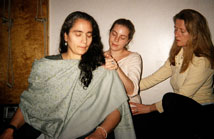

On-Site Trainings/Certification Programs |
| Each year Martha Eddy & the CKE faculty conduct
trainings for professionals. The goal is to creatively guide professionals
to help others to fully enjoy the satisfactions of life, and to experience
quicker access to balance even in times of stress. These professional
training programs focus on body awareness and use movement as a teaching
tool. They can include how to effectively read and respond to body language
as well as principles about the positive effects on the brain of learning
through movement.
Professional Certifications:
Somatic Movement Therapy involves working with clients to improve physical
function and holistic expression in movement and life. The key goals of
Martha Eddy's Dynamic Embodiment Movement Therapy Training (DE-SMTT) are embedded
in Eddy's "cycle of intervention" which is a therapeutic model of effecting
change in health and lifestyle through observation, support and exploration.
Martha Eddy and other renowned faculty teach DE-SMTT through Moving On Center
in California, in Massachusetts, and in NYC. Eddy has carefully combined
principles of Body-Mind Centering© (BMC) and Laban Movement
Analysis (LMA) as well as her own to create a practical approach to
individualized therapeutic practice and performance enhancement. This
program teaches how to use Eddy's systems of Dynamics of Touch©,
Dynamic Movement, Dynamic Health© and Dynamic Embodiment©. Discussion
also centers on larger global issues that limit peace and community building,
and how to foster creative solutions to engage in community wellness.
The DE-SMTT is an approved training program of the International
Somatic Movement Education and Therapy Association.
DE-SMTT students can also gain academic credits in Somatic Psychology or Interdisciplinary graduate studies if matriculated with Santa Barbara Graduate Institute and the State University of New York/Empire State College.
Download 2-page Dynamic Embodiment brochure Teach Moving On Aerobics(sm) or Body-Mind Dancing(sm). BodyMind Dancing teachers are also usually Moving on Center or Dynamic Embodiment graduates. Other Somatic Movement Therapists interested in the special dance education of Martha Eddy may apply to train. They will be required to develop their background Dynamic Embodiment through classes in Laban Movement Analysis. Training requires specific Phase One DE-SMTT courses, prior training or track record in dance education, attending a minimum of twenty BodyMind Dancing© classes, and participation in teacher training workshops sponsored by Martha Eddy/Moving On Center-East. Instructors must participate in supervised teaching before becoming certified. This is an individualized mentorship program: readiness for teaching BodyMind Dancing will be assessed by founder Martha Eddy or her advanced instructors. BodyMind Fitness Certification Training On-Site Trainings
|